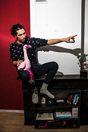
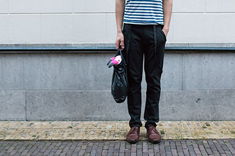
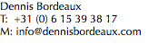

About

![With a family like his – where music courses through the veins – it’s no surprise that Dennis Bordeaux decided at a young age to follow in the footsteps of his fellow Bordeauxs.
Now, years later, Dennis has stepped out of his older brother Louis’ (FATA) shadow, with achievements including, but not limited to, joining Akwasi on Oerol Festival, a successful theatre tour with the popular Dutch band Lieve Bertha (2 EPs/CDs, and winner of the Crowd’s Favourite prize at the Grote Prijs van Nederland), intensive cooperation with drum collective Percossa and international gigs as bassist with Strawboy, the former keyboard player for Bonobo. In addition to that, he’s also one of the first participants of the prestigious Musician 3.0 class of the Utrecht Conservatory. While his focus lies mostly with bass, Dennis is also specialised in the more technical and meta-side of music. He’s predominantly a transformational musical leader, and a real initiator who knows his software like the back of his hand, with handmade sounds that sound exactly as intended.
His masterful manner of composing, producing, improvising and combining live with electronic music, makes for a magical mix that I can only describe as the impressionistic lovechild of J-Dilla, SBTRKT, N.E.R.D., Noisia, D’Angelo and Bodyrox. He laughingly describes himself as an old DOS computer trying to render a high-res picture, but I don’t agree. Dennis is the most organised scatterbrain I’ve ever met; and while he may be extremely perfectionist (as showcased by his perfectly categorised schedule), he’s not afraid to let go of the reins, like a tightrope dancer with an invisible safety net. With his gripping sound, unrivalled focus, and loveable personality, I’m almost certain that Dennis Bordeaux will make a lasting impression on the musical world. Best keep an eye on this one. -Joppe Varkevisser](../images/u877-18.png)